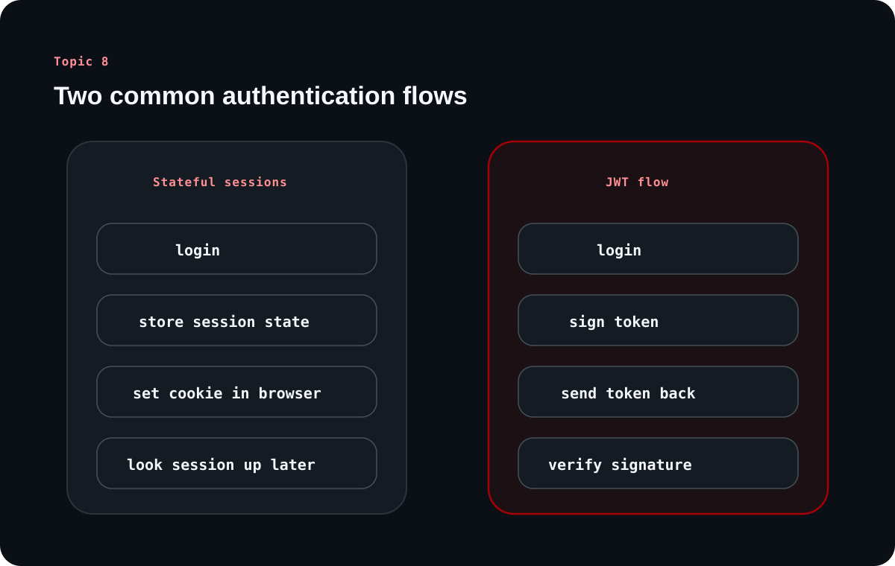

Authentication and Authorization for Backend Engineers
Topic 8 is where backend architecture meets trust. This article keeps the source's long historical arc, but translates it into the practical questions beginners really need answered: who is this caller, what can they do, and how do we manage that safely at scale?
Inside this article
IdentityPermissionSessionsJWTOAuthOIDCRBAC
Authentication answers who you are. Authorization answers what you are allowed to do. Most real systems need both, and the wrong mental model for either one creates security problems quickly.
Chapter 1
Authentication and authorization are related but not identical
The source starts with the distinction every backend learner needs to internalize early.
Who are you? What can you do?
Authentication verifies identity. Authorization decides what actions that identity may perform. The first establishes trust in the caller's identity; the second turns that identity into actual permissions.
Confusing the two leads to sloppy designs. A system may authenticate someone correctly and still need to deny a protected action because their role or scope does not permit it.
Why the history still matters
The source includes a historical arc from implicit trust to shared secrets, passwords, cryptography, MFA, and modern protocols. The point is not nostalgia. It is to show that authentication keeps evolving because trust must scale beyond human familiarity.
As systems became larger, more distributed, and more internet-facing, identity could no longer depend on local recognition. It had to become formal, portable, and cryptographically defensible.
Era
Shift
Main lesson
Early communities
Trust by recognition
Works only at small human scale.
Password era
Shared secrets and stored credentials
Identity becomes portable but fragile.
Cryptographic era
Key exchange and tickets
Trust moves toward stronger verification.
Modern web era
JWT, OAuth, OIDC, MFA, passwordless
Identity must work across browsers, APIs, devices, and providers.
Chapter 2
Sessions, cookies, and JWTs solve the continuity problem differently
Because HTTP is stateless, systems need an explicit way to preserve identity across multiple requests.
Sessions and cookies in a stateful model
A session-based system stores user state on the server, then gives the client a session identifier, usually through a cookie. On the next request, the server looks up that session and reconstructs the user's authenticated context.
The source also notes how storage evolved from files to databases to distributed stores such as Redis or Memcached as applications needed to scale.
JWTs move identity state into the token itself
JWT-based authentication shifts the design by embedding claims directly into a signed token. Instead of looking up a session record on every request, the server can verify the token signature and read the user claims from the token payload.
That makes distributed systems easier to scale, but it also weakens revocation unless you add compensating mechanisms such as blacklists or short expirations.
Learning diagram

Stateful sessions and stateless JWTs solve the same continuity problem, but they distribute responsibility very differently between client, server, and storage.
Clarified note
Cookies are not an authentication method by themselves. They are a browser transport and storage mechanism that can carry session identifiers or tokens.
Chapter 3
Different authentication models fit different system shapes
The source compares stateful auth, stateless auth, API keys, and OAuth-style delegated access to show that there is no single universal choice.
Choose the model by the operating constraints
A useful way to read the source is as a tradeoff table. Stateful systems trade extra server-side coordination for strong revocation control. Stateless systems trade simpler scaling for harder revocation. API keys simplify machine access. OAuth and OIDC support third-party and federated flows.
This kind of comparison is more valuable for beginners than memorizing slogans like JWT is modern or sessions are old. The real question is which constraints matter in the system you are building.
Model
Where it shines
Main tradeoff
Stateful sessions
Traditional web apps with strong session control
Needs server-side session storage and coordination
JWT-based stateless auth
Distributed APIs and mobile-heavy systems
Revocation is harder without added state
API keys
Machine-to-machine communication
Limited user context and coarse-grained control
OAuth 2.0 / OIDC
Delegated access and federated login
More moving parts and more implementation complexity
Chapter 4
OAuth 2.0 and OIDC handle delegation and federated identity
The source makes a valuable distinction here: OAuth and authentication are related, but not interchangeable.
OAuth 2.0 solves the delegation problem
OAuth 2.0 exists so one application can access another system's resources on behalf of a user without the user handing over their password. Tokens and scopes replaced the unsafe practice of password sharing.
That is why OAuth is described as an authorization framework first. It is about delegated access with controlled permissions.
OIDC adds the identity layer
OpenID Connect builds on OAuth and adds an ID token so the client can also learn who the user is. This is what makes sign in with Google style experiences feel like login rather than just delegation.
In other words, OAuth tells you what access has been granted, while OIDC also gives you identity claims suitable for authentication flows.
Chapter 5
Authorization and security hygiene decide whether auth actually holds
The source closes by moving from identity mechanics to permission design and defensive behavior.
Roles are a practical authorization baseline
Role-Based Access Control is presented as the practical model most beginners should understand first. Users are assigned roles, and roles map to permissions over resources and actions.
This becomes especially important in multi-user systems where not every authenticated user should see or change the same things. Successful authentication without proper authorization is not real security.
The small implementation details that protect the system
The note highlights two security practices worth remembering early: avoid overly specific authentication error messages, and reduce timing differences that reveal too much about login failures.
Those details matter because attackers use them to enumerate users or infer whether they are getting closer to a valid credential pair.
Prefer generic login failure messages over user-not-found or wrong-password responses.
Use constant-time comparison and other mitigations to reduce timing leaks.
Choose stateful or stateless approaches based on revocation, scale, and operational needs.
Use external auth providers when the system's complexity outgrows in-house comfort.
Overall takeaway
What to remember
Authentication proves identity, authorization limits action, and both have to be designed around HTTP's stateless nature. Sessions, JWTs, OAuth, OIDC, and RBAC are not competing buzzwords; they are different answers to different trust and system-design problems.